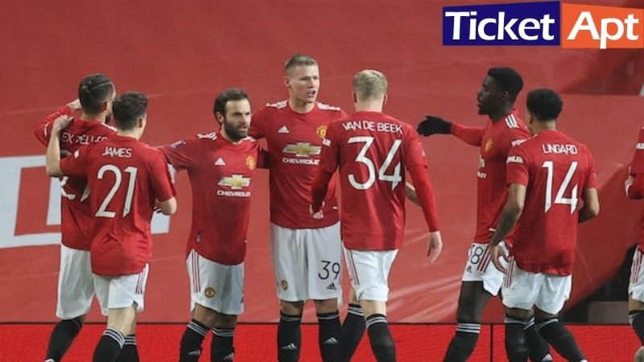

BURSA TRANSFER MANCHESTER UNITED
DAFTAR PEMAIN BARU MANCHESTER UNITED
Berikut merupakan nama-nama pemain baru Manchester United musim ini yang dibeli pada
bursa transfer musim panas dan bursa transfer musim dingin.
| NAMA PEMAIN |
ASAL CLUB |
POSISI |
HARGA |
| Jadon Sancho |
Dortmund |
Winger |
85 juta |
| Raphael Varane |
Real Madrid |
Bek tengah |
40 juta |
| Cristiano Ronaldo |
Juventus |
Penyerang |
23 juta |
| Tom Heaton |
Aston Villa |
Kiper |
free |
| Diogo Dalot |
AC Milan |
Bek kanan |
end of loan |
DAFTAR PEMAIN MU YANG DI JUAL
Berikut merupakan nama-nama pemain Manchester United yang dijual dan dilepas ke klub lain
pada bursa transfer musim panas dan bursa transfer musim dingin.
| NAMA PEMAIN |
CLUB TUJUAN |
POSISI |
HARGA |
| Daniel James |
Leeds United |
Winger |
29 juta |
| Joel Pereira |
RKC Waalwijk |
Kiper |
free |
>
DAFTAR PEMAIN MU YANG DI PINJAMKAN
Berikut merupakan nama-nama pemain Manchester United yang dipinjamkan ke klub lain pada bursa
transfer musim panas dan bursa transfer musim dingin.
| NANA PEMAIN |
CLUB TUJUAN |
POSISI |
| Brandon Williams |
Norwich |
Bek kiri |
| Andreas Pereira |
Flamengo |
Gelandang |
| Axel Tuanzeb |
Aston Villa |
Bek tengah |
| Facundo Pellsitri |
Alaves |
Winger |
| Tahith Chong |
Birmingham |
Winger |
Itulah info mengenai daftar pemain Manchester United beserta prediksi formasi dan berita
transfer pemain update terbaru saat ini. Harga transfer di atas ditampilkan dalam satuan euro.
Kita nantikan saja hasil MU di Liga Inggris dan Liga Champions musim ini.
